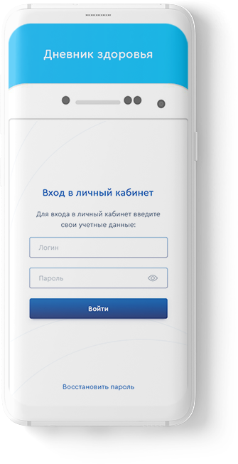
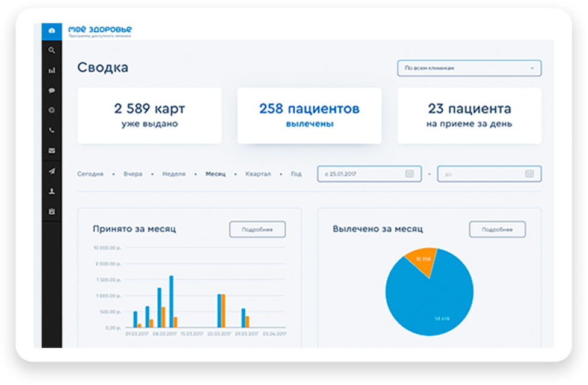

Что такое «Дневник здаровья»?
- Дневник пацинета - это удобный онлайн-сервис :
- Вносите результаты измерений вручную или с помощью интегрированных приборов
- Ведите персональную медицинскую карту с историей ваших измерений
- Делитесь результатами измерений со специалистами для повышения эффективности лечения
- Получайте рекомендации, созданные специально для вас
Функции приложения
Планирование графика приема лекарств
Уведомление врача об исполнении назначений

Ведение дневника самочувствия
Удаленное предоставление измерений врачу
Общение с врачами через встроенный мессенджер

Получение уведомлений для выполнения назначений
Ведите персональный дневник мониторинга здоровья
1
Хранение данных
Контролируйте и следите за динамикой изменения
показателей вашего здоровья. Вносите результаты
измерений медицинских показателей вручную или с помощью
интегрированных приборов, храните историю измерений и
отслеживайте динамику состояния здоровья
2
Сообшение информации врачу
Позвольте специалисту дистанционно следить за вашим
здоровьем. Будьте на связи со специалистом - отправляйте
информацию о своем самочувствии, обменивайтесь
сообщениями и получайте рекомендации по вашему здоровью
и лечению.
3
Напоминание о важном
Получайте рекомендации, созданные специально для вас.
Система, персонально настроенная под ваши требования,
автоматически напомнит о необходимости выполнить
рекомендации медицинского специалиста: принять препарат
или выполнить измерения.

Специалистам
- Дистанционный контроль состояния здоровья ваших пациентов
- Наблюдение за динамикой изменения основных медицинских показателей
- Наличие алгоритмов автоматического анализа поступающей информации
- Индивидуальная система уведомлений об изменении состояния каждого пациента
- Дополнительный сервис коммуникации, позволяющий активно вовлекать пациента в процесс профилактики, лечения и реабилитации.
Получите бесплатный доступ к «Дневнику здоровья»
Оставьте свою электронную почту
и вы узнаете о запуске данного сервиса первым!
Разработано Redsoft